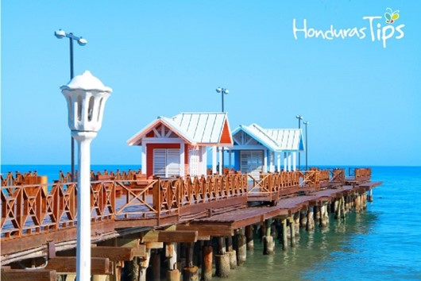
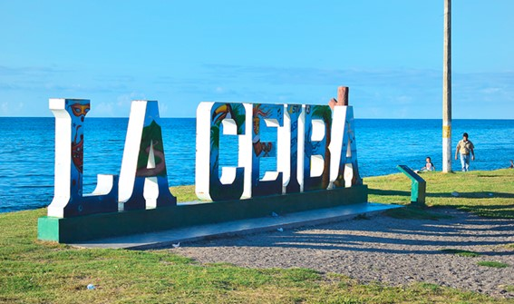

 La ciudad de La Ceiba es un puerto del departamento Atlántida y del municipio homónimo, en la república de Honduras, además es la quinta ciudad más grande y poblada del país después de Danlí.
 Las primeras personas que habitaron este municipio eran mayormente tolupanes, que se organizaban en tribus. En el siglo XIX, los habitantes de este municipio se concentraron mucho en la actividad bananera. La Ceiba adquirió el título de municipio el 23 de agosto de 1877, su primer alcalde fue el señor Mariano Guiraud de origen francés.
El nombre de la ciudad se debe a un gigantesco árbol de ceiba que se alzaba a orillas del mar Caribe, lugar donde hoy convergen la principal avenida y la primera calle. La grandeza de este árbol de ceiba era tan impresionante que los primeros pobladores (garífunas provenientes de la isla de San Vicente) aseguraban que era la escalera que utilizaba cuando bajaba del cielo a visitar la Tierra. De hecho, había tantos árboles de Ceiba, o Ceibon, por lo cual los habitantes se acostumbraron a llamar este lugar La Ceiba.
En la actualidad, La Ceiba es la tercera ciudad y el segundo puerto en importancia del país, supera los 250.000 habitantes en más de 260 barrios y colonias asentados sobre una superficie de aproximadamente 6000 hectáreas. Tiene el índice de alfabetismo más alto en Honduras.